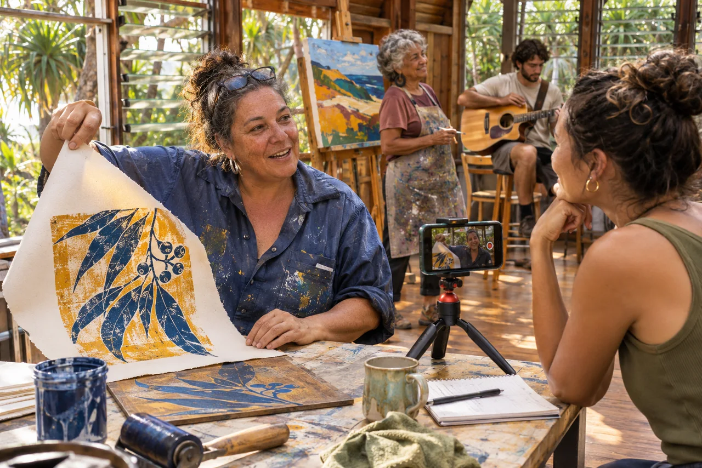

Phone post
Island arts night in Dunwich
Hear original music and see a short film about three island artists. Saturday, 6.30 pm in the community hall courtyard. Check the organiser’s event page for details.
Proposed beginner workshop
Follow a printmaker, a painter and a musician preparing for an island arts night. Use a phone to record each artist introducing a work they choose. Edit a short film, add captions and write a notice for the performance and screening.
Start with the pitch
You’ll need a phone, a stand or tripod, headphones and an editing app. Invite willing artists to take part, or ask peers to rehearse with their own works. A mentor can help with the edit, and a screen host can check how the finished notice reads.
Allow time for all three artists to be heard. Use the timings as a guide and agree the final clips with the contributors.
Show the artists setting up for the evening. Use the room’s own sound if everyone captured in it has agreed.
Give the printmaker space to introduce their work. Show the mark they want viewers to notice.
Show the painting as the artist wants it seen. Give their explanation time before moving to the next voice.
Let the musician introduce the piece and play the agreed passage. End with clear credits for each artist, work and music contribution.
This fictional exercise uses a community hall courtyard in Dunwich. The organiser confirms a Saturday 6.30 pm start for the performance and screening. Write the invitation for each display, then practise changing the time.
Island arts night in Dunwich
Hear original music and see a short film about three island artists. Saturday, 6.30 pm in the community hall courtyard. Check the organiser’s event page for details.
Island arts night · Live music and short film
Saturday, 6.30 pm · Community hall courtyard, Dunwich
Island arts night
Saturday, 6.30 pm · Community hall courtyard, Dunwich
Tap for the performance, screening and organiser’s details.
Enter the title, publisher, place, summary and expiry in the draft tool. Use https://example.org/ as the source for this exercise and keep the draft in your practice files. For a real event, attach the organiser’s public event link.
Use the same Saturday clock for all three steps. The organiser’s confirmation is the source for the change.
The organiser confirms a 6.30 pm start. Record when the notice was approved, the three display versions and the 7.15 pm take-down.
Record the source and publish version 2 through the same approved channels. Ask the host to replace version 1 and confirm what is visible. Flag any offline display for follow-up.
Check each outlet has removed it from rotation. Keep the checked source, permission record, agreed film and a note of what changed.
A first session could use one story and one available screen. The learner completes a useful task with the mentor, then shows a host how to check and remove the practice notice.
Once the crew can hand over a checked film, rehearse a live introduction or edit a short radio segment. Ask which interviews and music the artists want to carry into the new format. Confirm those permissions, check credits and make a transcript available.
Luke’s proposed film club would give local crews a place to watch a rough cut and discuss it. The draft Quandamooka Film Festival toolkit is a separate planning resource. Public use of the proposed festival name and any Quandamooka cultural material would need agreement from the relevant Quandamooka people. A public programme would need confirmed organisers and published details.
After watching the arts night film, note a moment that makes an artist’s point clear, a caption or transition to revisit and a question to check with the contributor. Give the editor the cut version, timecodes and one agreed next edit. Keep private notes with the crew.
Put together the latest captioned cut, runtime, short synopsis, credits and a cleared still. Keep a separate record of the permission for each work, performance and music excerpt. Test the viewing link with the intended reviewer. If a festival opens a call, check its category, deadline and premiere rules before sending the film.
The workshop adapts the local media curriculum, capture checklist and mentored work handover. Minjerribah Screen & Media Network · Ready SETCO notices & media · Ready SETCO training & work